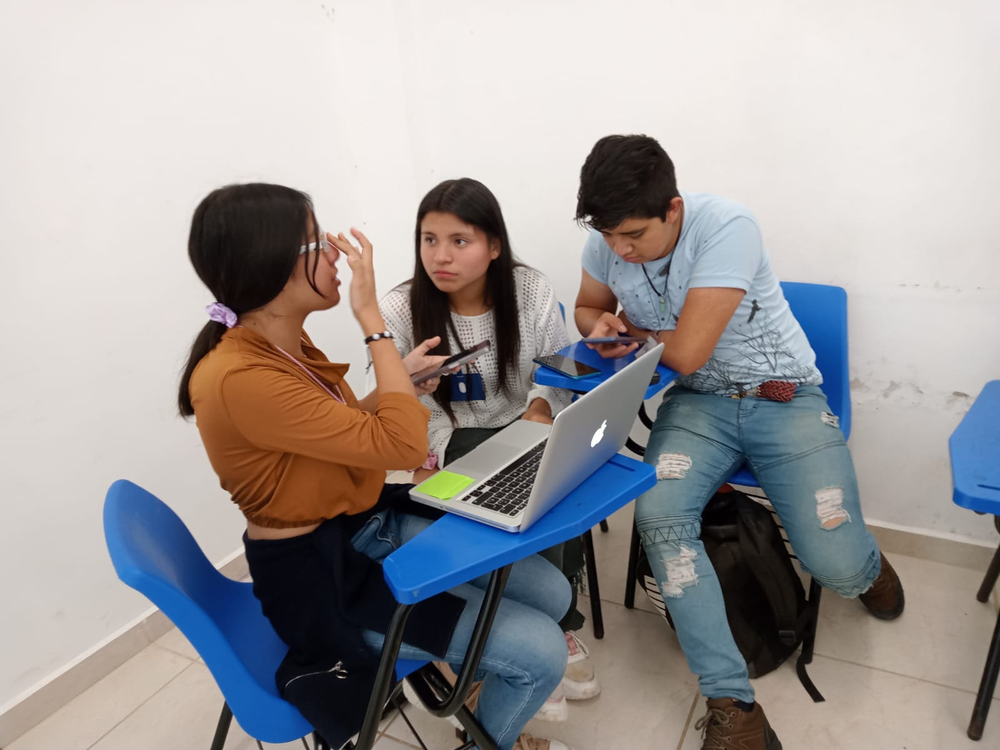
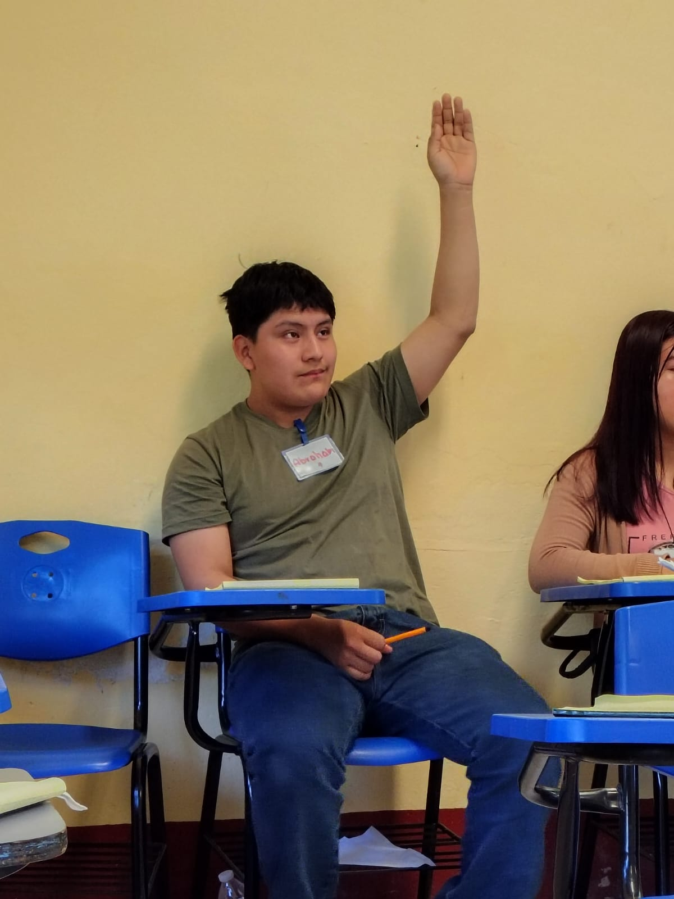
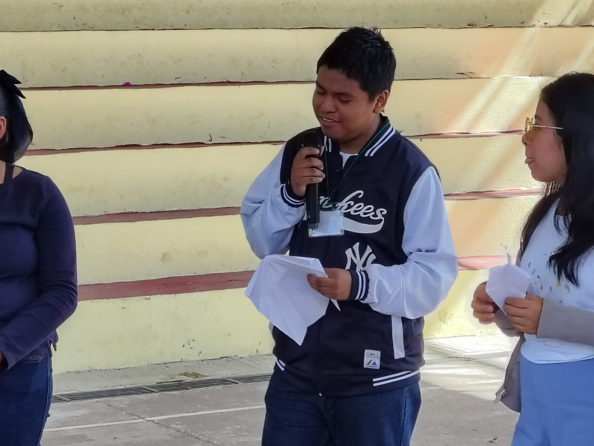
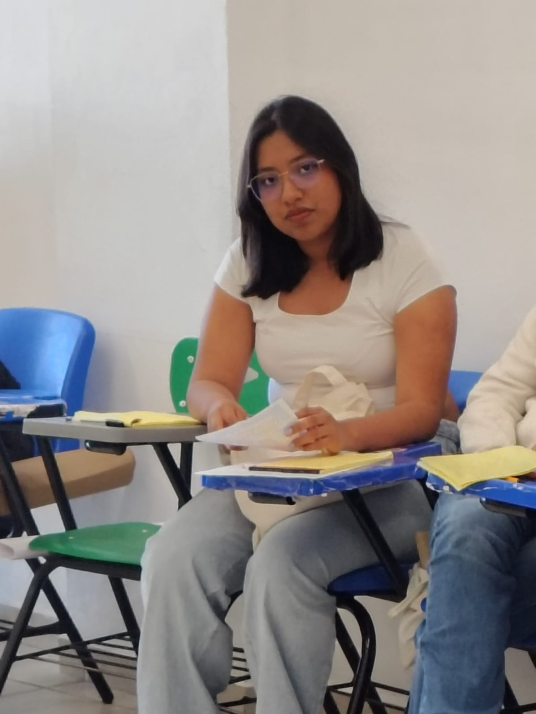
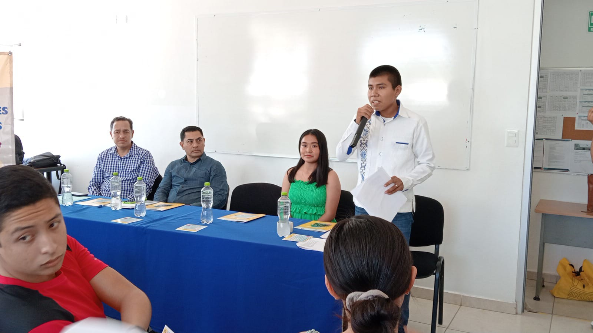
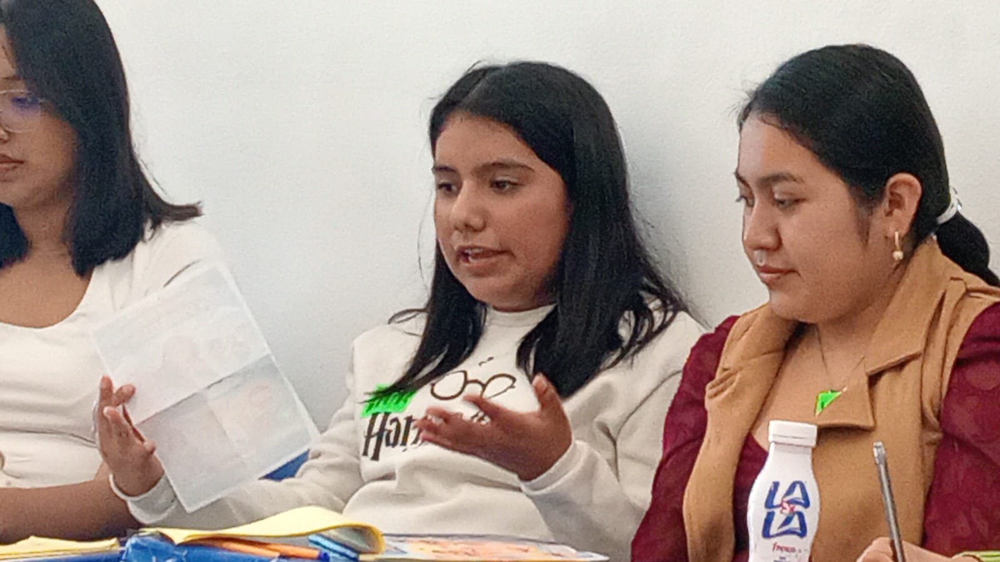
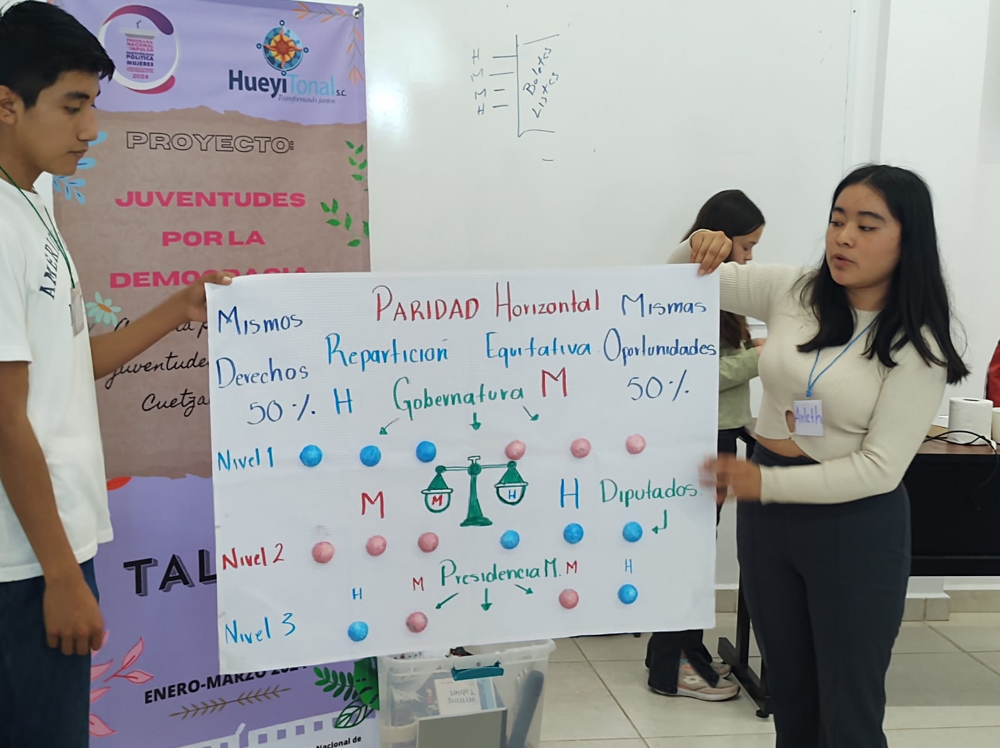
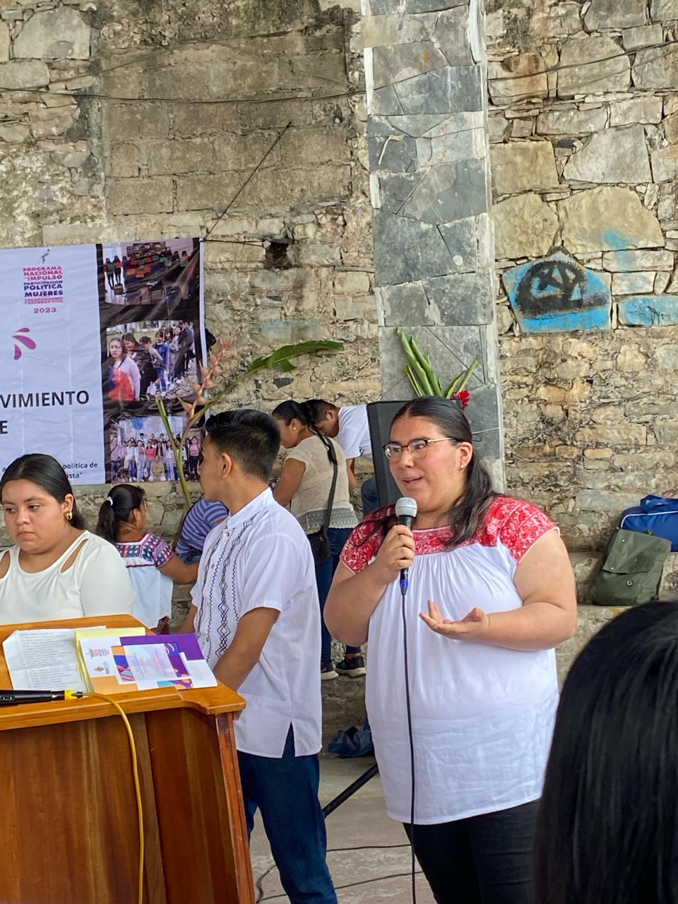
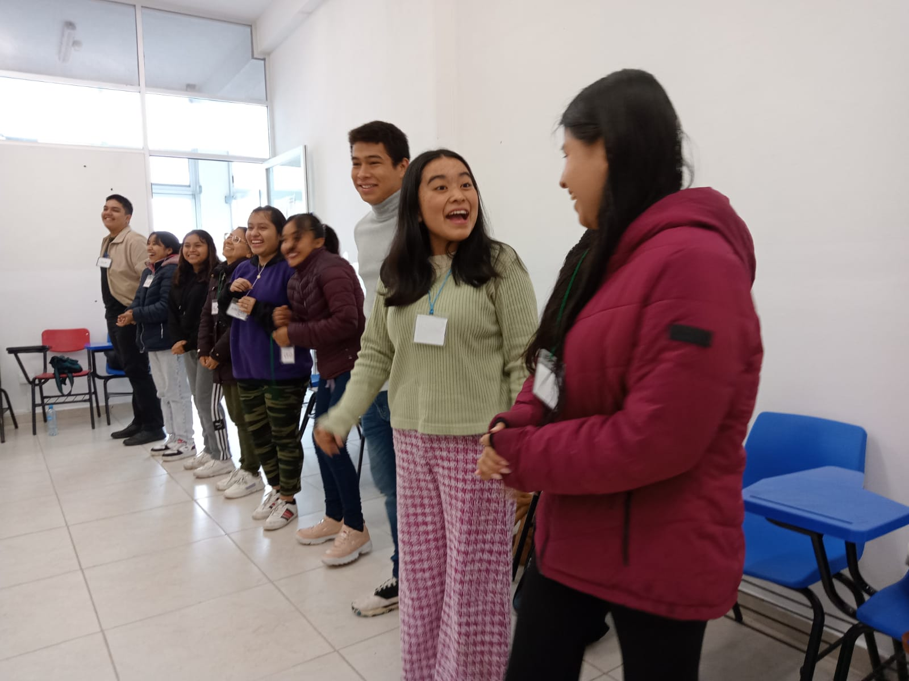
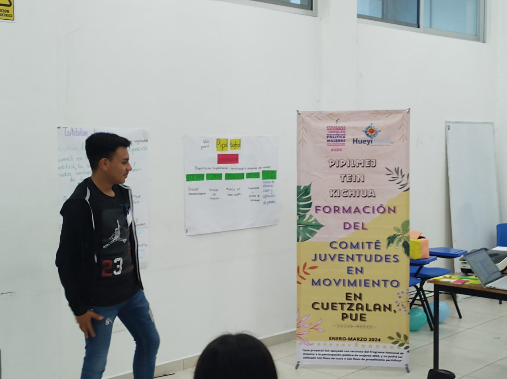

Lo que dicen las juventudes
Las juventudes no solo participan… también reflexionan, cuestionan y proponen.
Este espacio reúne sus voces, experiencias y aprendizajes.
Videos cortos
Sustituye estos espacios por clips reales (YouTube, Vimeo o archivos locales).
Video corto 2
Placeholder — añade iframe o <video>
Video corto 3
Placeholder — añade iframe o <video>
Frases pendiente
Aquí irán citas textuales de las juventudes cuando estén disponibles.
«Frase pendiente — sustituir por testimonio real.»
«Frase pendiente — sustituir por testimonio real.»
«Frase pendiente — sustituir por testimonio real.»
Fotos
Galería de momentos del proceso (reemplaza las imágenes por fotos propias).









